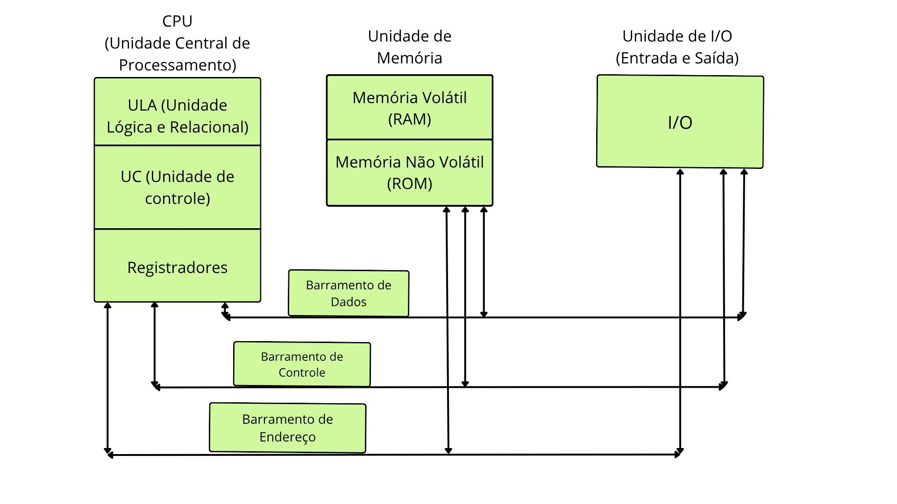

BUSCA BINÁRIA
Um jogo para Arquitetar seu Conhecimento
Jogar
1. Aqui está um desenho sobre um esquema básico de arquitetura de computadores e seus componentes

Iniciar Quiz
Próxima →
Resultado
Tentar novamente